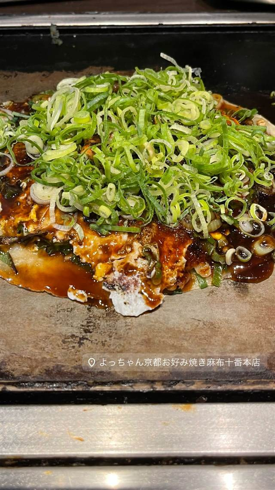

お好み焼・鉄板焼 よっちゃん
京都で36年営業した店を丸ごと移転、名物は九条ねぎ焼き
よっちゃん京都お好み焼き麻布十番本店
京都・東九条で36年にわたり営業してきたお好み焼き店が、本店を東京・麻布十番へ移転。京都の契約農家から仕入れる九条ねぎをたっぷり使った「九条ねぎ焼き」と「ホルモン焼き」が名物で、女将が鉄板前で焼く様子を間近で見られる。
TRIVIA
豆知識
- 京都東九条で36年営業した本店をまるごと麻布十番へ移転してきた
- 使う九条ねぎは京都の契約農家から直接仕入れている
REVIEWS
世間の評判
3.41食べログ
目の前で焼く京都風お好み焼き
- 目の前で焼き加減を調整してくれる京都風お好み焼きの味を評価する声が多い
- 老夫婦が営む昔ながらの落ち着いた雰囲気を評価する人が多い
- 焼きそばなど一部メニューの量が少ないと感じる人もいる
食べログ 口コミ191件
| 創業 | 京都・東九条で創業し36年営業した本店を麻布十番へ移転 |
|---|---|
| 系譜 | 京都のお好み焼き（べた焼き）文化の系譜 |
| 看板 | 九条ねぎ焼き、ホルモン焼き |
| こだわり | 京都の契約農家から仕入れる九条ねぎをたっぷり使い、クレープのように薄い生地で焼く「べた焼き」スタイル |
| どこから | 都心 |
| 営業時間 | 月〜日 12:00-14:00、17:00-23:00 |
| 予算 | 昼 ¥1,000～¥1,999 夜 ¥3,000～¥3,999 |
| 場所 | 麻布十番駅 東京都港区麻布十番 |
| メモ | カウンター・テーブルのほか奥に座敷あり、芸能人も訪れる人気店で予約が取りづらい |
食べたもの：お好み焼き
NEARBY
近い店・同じ系統の店
-
 パスタ 麻布十番
Grill & Pasta es 麻布十番
六本木Ajitoの姉妹店、特製グリルで焼く牡蠣グラタン
昼 ¥1,000～¥1,999 夜 ¥4,000～¥4,999
パスタ 麻布十番
Grill & Pasta es 麻布十番
六本木Ajitoの姉妹店、特製グリルで焼く牡蠣グラタン
昼 ¥1,000～¥1,999 夜 ¥4,000～¥4,999
-
 ピザ 麻布十番
ピッツェリア ロマーナ ジャニコロ
サバティーニで20年修業した店主が焼くローマ風薄生地ピッツァ
夜 ¥5,000～¥5,999
ピザ 麻布十番
ピッツェリア ロマーナ ジャニコロ
サバティーニで20年修業した店主が焼くローマ風薄生地ピッツァ
夜 ¥5,000～¥5,999
-
 ピザ 麻布十番
SAVOY クラシック
アメリカン風ピザ全盛の時代に本格ナポリピッツァを日本に広めた先駆け的存在
昼 ¥1,000～¥1,999 夜 ¥2,000～¥2,999
ピザ 麻布十番
SAVOY クラシック
アメリカン風ピザ全盛の時代に本格ナポリピッツァを日本に広めた先駆け的存在
昼 ¥1,000～¥1,999 夜 ¥2,000～¥2,999
-
 イタリアン 六本木一丁目
キャンティ 飯倉片町本店
1960年開業、大葉を使うバジリコパスタの元祖とされる日本のイタリア料理店の草分け
昼 ¥8,000～¥9,999 夜 ¥20,000～¥29,999
イタリアン 六本木一丁目
キャンティ 飯倉片町本店
1960年開業、大葉を使うバジリコパスタの元祖とされる日本のイタリア料理店の草分け
昼 ¥8,000～¥9,999 夜 ¥20,000～¥29,999
-
 イタリアン 麻布十番駅
Mancy's Tokyo
トリュフリゾットも楽しめる深夜4時までの複合型イタリアン
昼 ¥6,000～¥7,999 夜 ¥8,000～¥9,999
イタリアン 麻布十番駅
Mancy's Tokyo
トリュフリゾットも楽しめる深夜4時までの複合型イタリアン
昼 ¥6,000～¥7,999 夜 ¥8,000～¥9,999
-
 ピザ 麻布十番（7番出口徒歩2分）
Nim's Pizza（旧店名：PIZZA CLUB）
NY仕込みの一枚売りスライスピザ、ソースは全て自家製
昼 ¥1,000～¥1,999 夜 ¥2,000～¥2,999
ピザ 麻布十番（7番出口徒歩2分）
Nim's Pizza（旧店名：PIZZA CLUB）
NY仕込みの一枚売りスライスピザ、ソースは全て自家製
昼 ¥1,000～¥1,999 夜 ¥2,000～¥2,999